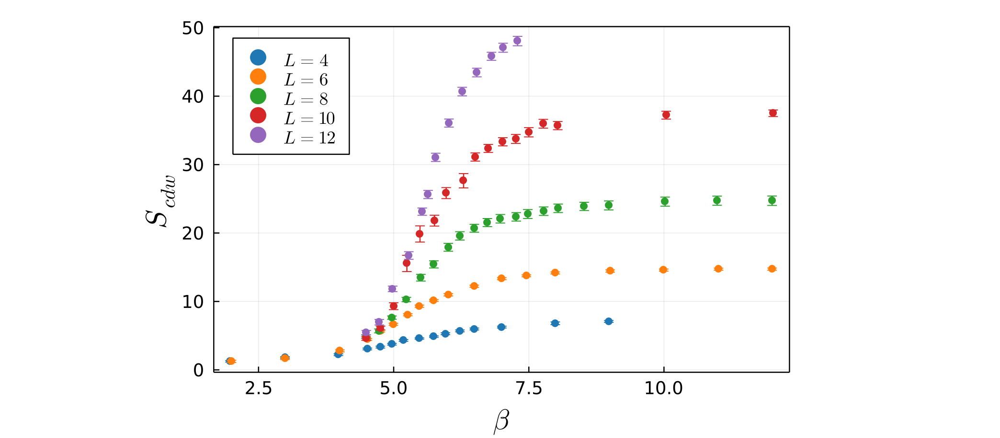

Example: Holstein model
The Holstein model is a simple tight-binding description of the electron-phonon interaction. On the square lattice, it exhibits a phase transition to charge density wave (CDW) order as the temperature is lowered, with the transition belonging to the 2D Ising universality class. The measurement used to detect CDW order is the charge structure factor, which is the Fourier transform of the density-density correlation function:
\[S(\mathbf{q}) = \frac{1}{N} \sum_{\mathbf{i}, \mathbf{j}} e^{i \mathbf{q} \cdot (\mathbf{i} - \mathbf{j})} \langle n_\mathbf{i} n_\mathbf{j} \rangle\]
where $\mathbf{i}$ and $\mathbf{j}$ denote sites of the lattice, and $n_\mathbf{i}$ is the electron density at site $\mathbf{i}$. When the CDW forms on the square lattice, electrons pair up and form a periodic "checkerboard" pattern consisting of alternating empty and doubly occupied sites. This is signaled by a peak in $S(q)$ at the CDW ordering wavevector, which in this case is $(\pi, \pi)$. We therefore define the order parameter $S_{cdw} = S(\pi, \pi)$ which should grow rapidly below a critical temperature $T_c$. In particular, when long-range CDW order emerges, the order parameter $S_{cdw}$ becomes sensitive to the finite size of the system, and thus below $T_c$ should grow in proportion to the number of lattice sites $N=L^2$.

Generally, near a phase transition, physical quantities (such as the order parameter $S_{cdw}$) should scale with the reduced temperature $t=(T-T_c)/T_c$ raised to the power of some critical exponent. The correlation length $\xi$ in turn scales with $t$ to the power of some critical exponent. However, for a finite size system, the more relevant length scale becomes the linear dimension $L$ of the lattice. In this case, $S_{cdw}$ should scale as some power of $L$ multiplied by a function of the ratio $L/\xi$. This is the scaling hypothesis, and forms the basis of the finite-size scaling approach.
For the square lattice Holstein model, the CDW transition breaks a $Z_2$ symmetry and thus belongs to the 2D Ising universality class, which has known critical exponents $\eta = 1/4$ and $\nu = 1$. Approaching the phase transition, the order parameter should scale as $S_{cdw} \sim L^{2 - \eta} f(t L^{1/\nu})$. Therefore if we plot:
\[S_{cdw} L^{-7/4} \quad vs. \quad (\beta - \beta_c)L\]
for different lattice sizes, the data should collapse onto a universal curve, allowing one to determine an estimate of the critical inverse temperature $\beta_c = 1/T_c$. Below we show the data collapse for the square lattice Holstein model setting $\beta_c = 6$ and using the Ising critical exponents.

This package includes a number of methods for performing finite-size scaling and for plotting results. In Demo 1, we show how to perform one-parameter scaling to find the optimal value of $\beta_c$ which produces the best data collapse for the square lattice Holstein model. In Demo 2, we show how two-parameter scaling can be performed by assuming the exponent $2-\eta$ is unknown, and finding the optimal values of both $\beta_c$ and $2-\eta$ which produce the best data collapse.
The data used in these demos is provided in the examples folder of this package. This example data can be imported via:
include("FiniteSizeScaling/examples/ExampleData.jl")
import .ExampleData.example_data_with_error
import .ExampleData.example_data_no_error
import .ExampleData.example_fit_weights